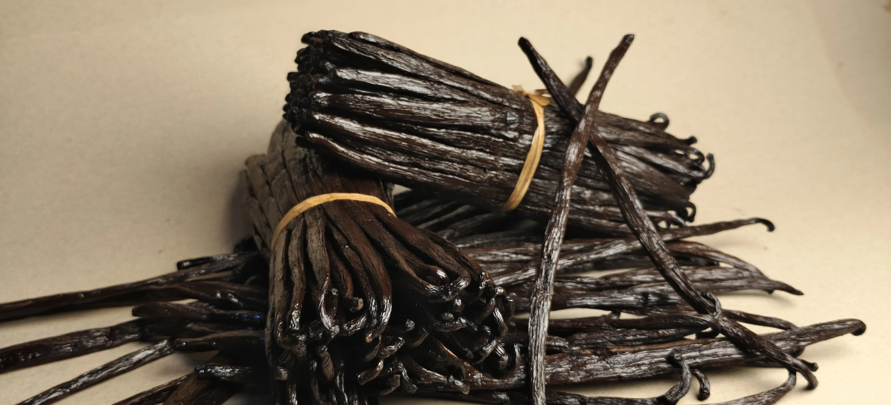

La gousse de vanille de Madagascar est l'une des épices les plus prisées au monde. Pourtant, le prix d'une gousse de vanille varie considérablement selon le circuit d'achat, la qualité et le volume. Ce guide vous donne toutes les clés pour comprendre la structure des prix et acheter au meilleur rapport qualité-prix.
Prix d'une gousse de vanille : les grandes fourchettes
Voici les fourchettes de prix observées sur le marché français selon le circuit d'achat :
Grande surface
1 à 3 gousses en tube plastique. Qualité variable, souvent séchées et peu aromatiques. Le packaging représente une part importante du prix.
Épicerie fine / boutique
Meilleure qualité en général, mais les marges intermédiaires restent élevées. Adapté aux achats occasionnels.
Achat pro en volume (1 kg+)
Tarif grossiste classique. Qualité TK garantie. Prix au kilo selon teneur en humidité et grade exact.
Direct producteur (Madagascar Vanilla)
Sans intermédiaire, directement depuis la région SAVA. Traçabilité complète, Grade TK, commandes à partir de 5 kg.
Ce qui détermine le prix des gousses de vanille de Madagascar
Le prix des gousses de vanille de Madagascar ne dépend pas d'un seul facteur. Voici les critères qui font varier le prix au kilo :
- Le grade qualité : le Grade TK (Tout-Venant Kilogramme) est le standard professionnel — gousses de plus de 14 cm, souples, à teneur en humidité contrôlée (18 à 38 %)
- La teneur en vanilline : pour la vanille noire Grade TK, elle oscille entre 1,6 et 2,2 %. C'est l'indicateur clé de l'intensité aromatique
- La longueur des gousses : les gousses de 16 cm et plus commandent une prime par rapport aux gousses de 14-15 cm
- Le volume commandé : à partir de 5 kg, les tarifs professionnels s'appliquent. Au-delà de 50 kg, des remises supplémentaires sont négociables
- La saisonnalité : la récolte a lieu d'août à octobre. Les prix sont généralement plus stables en début de saison post-récolte (novembre-janvier)
Prix au kilo vs prix à la gousse : ce que ça change vraiment
Une gousse de vanille Grade TK pèse en moyenne 5 à 8 grammes. Cela signifie qu'un kilogramme contient environ 130 à 200 gousses selon la taille. L'achat au kilo permet d'avoir une vue claire du coût réel par unité.
Pour un professionnel qui utilise 2 à 3 gousses par jour (pâtisserie artisanale, restauration), un stock de 5 kg représente 3 à 4 mois d'approvisionnement — avec un coût par gousse 3 fois inférieur au prix de détail.

Vanille noire vs vanille rouge : une différence de prix ?
Les deux variétés proviennent de la même région SAVA et de la même plante (Vanilla planifolia bourbon). La différence de prix reflète le coût du processus d'affinage :
- Vanille noire : affinage complet de 6 à 9 mois, teneur en vanilline maximale → prix légèrement supérieur
- Vanille rouge : processus raccourci, profil aromatique plus frais → 10 à 20 % moins cher selon les années
Pour un usage en pâtisserie professionnelle, la vanille noire reste le meilleur investissement en termes de rendement aromatique. La vanille rouge est préférable pour les applications à froid (parfumerie, cocktails) où son profil floral est un avantage.
Pourquoi les prix de la vanille fluctuent-ils autant ?
La vanille est la deuxième épice la plus chère au monde après le safran. Plusieurs facteurs expliquent ses fortes variations de prix :
- Les aléas climatiques : Madagascar est régulièrement frappée par des cyclones tropicaux. Le cyclone Enawo en 2017 a détruit une part importante des cultures et provoqué un pic historique dépassant 600 €/kg
- La spéculation : les acheteurs internationaux et les courtiers amplifient les variations en anticipant pénuries ou surplus
- La lenteur du cycle de production : 9 mois de pousse + 6 mois d'affinage minimum. Il est impossible de compenser rapidement un déficit de récolte
- La concentration de la production : Madagascar représente environ 80 % de l'offre mondiale. Toute perturbation sur l'île se répercute immédiatement sur les prix globaux
En 2024-2026, les prix se sont stabilisés dans une fourchette de 80 à 150 €/kg pour la qualité Grade TK, après les pics spéculatifs des années précédentes. C'est une fenêtre favorable pour les acheteurs professionnels qui souhaitent sécuriser leur approvisionnement.
Acheter en direct : pourquoi c'est moins cher et plus sûr
Chez Madagascar Vanilla, nous travaillons sans intermédiaire avec des producteurs de la région SAVA. Cette approche directe présente plusieurs avantages concrets :
- Prix nets de commission : sans courtier ni importateur, vous payez au plus proche du prix producteur
- Traçabilité complète : chaque commande est accompagnée de l'origine précise (sous-préfecture, collecteur), de la teneur en vanilline et du taux d'humidité
- Flexibilité : commandes à partir de 5 kg, échantillons disponibles avant engagement en volume
- Qualité garantie Grade TK : tri manuel et contrôle qualité avant expédition